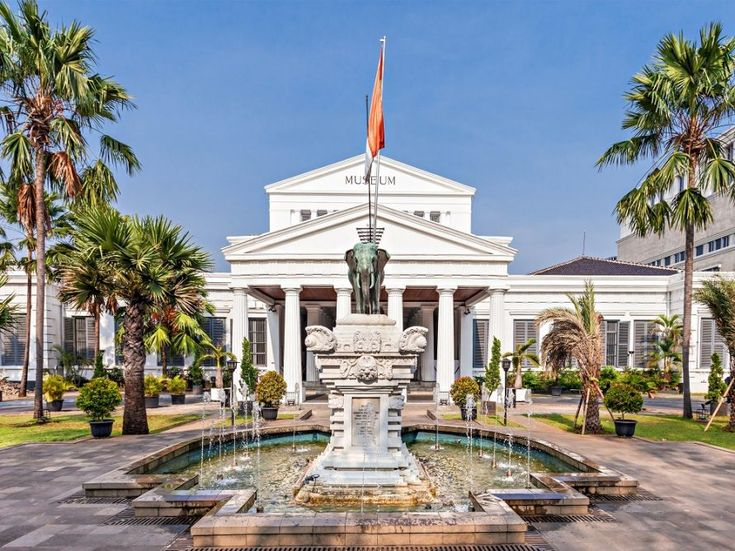
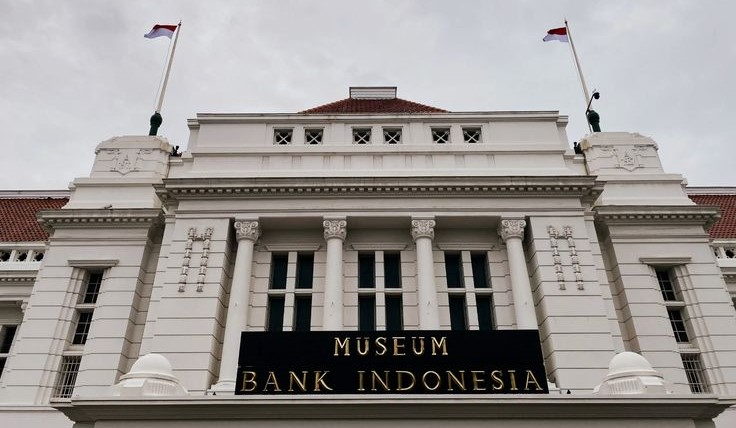
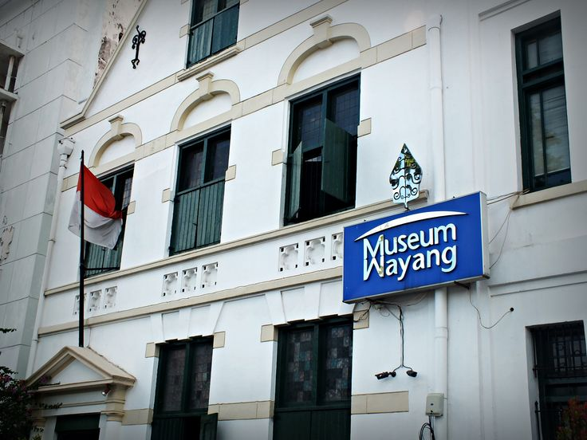
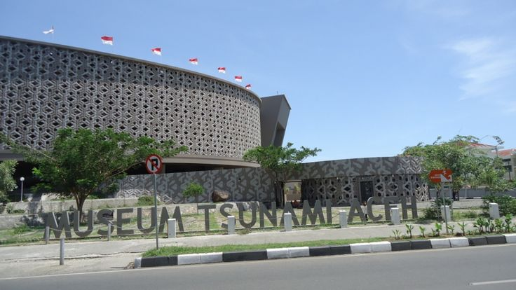
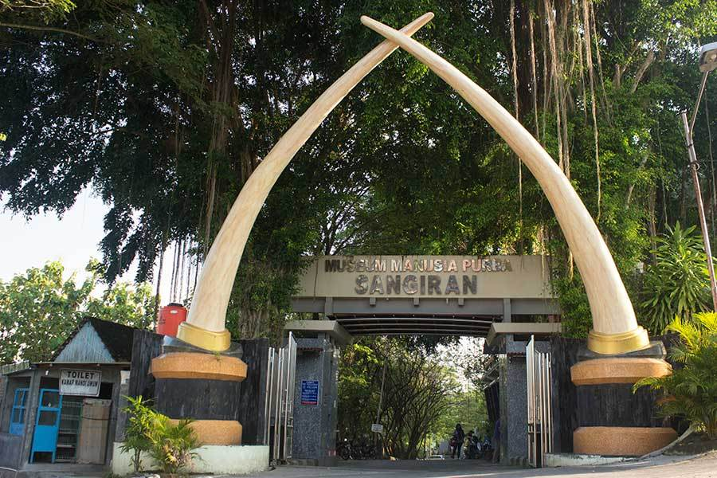

Selamat Datang di Museum Indonesia
Indonesia memiliki banyak museum yang kaya akan sejarah dan budaya. Beberapa museum terkenal di antaranya adalah Museum Nasional Indonesia yang dikenal sebagai Museum Gajah, Museum Bank Indonesia yang menggambarkan sejarah perbankan, Museum Wayang yang memamerkan koleksi wayang dari berbagai daerah, serta Museum Angkut di Malang yang merupakan museum transportasi terbesar di Asia Tenggara. Jangan lewatkan juga Museum Tsunami Aceh dan Museum Sangiran yang memiliki nilai edukatif dan sejarah tinggi.

Daftar 6 Museum Populer di Indonesia
Berikut ini adalah beberapa museum paling populer di Indonesia yang menawarkan berbagai koleksi menarik, mulai dari artefak sejarah, seni budaya, hingga teknologi transportasi dan bencana alam.
Museum Nasional Indonesia
Museum dengan koleksi sejarah dan budaya terlengkap di Indonesia, dikenal sebagai Museum Gajah.
Museum Bank Indonesia
Museum yang menampilkan sejarah perbankan dan moneter Indonesia dalam bangunan bersejarah.
Museum Wayang Jakarta
Museum yang menyimpan koleksi wayang dari berbagai daerah di Indonesia dan dunia.
Museum Angkut Malang

Museum transportasi terbesar di Asia Tenggara dengan koleksi kendaraan dari berbagai era.
Museum Tsunami Aceh
Museum memorial yang dibangun untuk mengenang bencana tsunami 2004 dan edukasi kebencanaan.
Museum Sangiran
Situs warisan dunia UNESCO yang menyimpan fosil manusia purba dan hewan prasejarah.
Informasi Harga Tiket Masuk Museum
| Museum | Harga Tiket Dewasa | Harga Tiket Anak | Keterangan |
|---|---|---|---|
| Museum Nasional | Rp15.000 | Rp5.000 | Gratis untuk pelajar berseragam |
| Museum Bank Indonesia | Rp5.000 | Rp0 | Anak-anak gratis |
| Museum Wayang | Rp5.000 | Rp2.000 | Diskon rombongan tersedia |
| Museum Angkut | Rp100.000 | Rp70.000 | Harga weekend berbeda |
| Museum Tsunami Aceh | Rp0 | Rp0 | Gratis, donasi sukarela |
| Museum Sangiran | Rp8.000 | Rp4.000 | Tersedia tiket terusan |
Galeri Koleksi Museum
Berikut beberapa ragam koleksi menarik dari berbagai museum terkenal di Indonesia, mulai dari artefak sejarah, wayang tradisional, kendaraan antik, hingga fosil manusia purba. Temukan kekayaan budaya dan sejarah nusantara melalui koleksi yang edukatif dan inspiratif.

Memamerkan koleksi artefak bersejarah dari berbagai periode dan kebudayaan di nusantara
Koleksi Mata Uang Kuno dari Museum Bank Indonesia
Koleksi Wayang Golek dari Museum Wayang Jakarta
Koleksi Mobil Antik dari Museum Angkut Malang
Fosil Manusia Purba dari Museum Sangiran, Sragen

Museum Tsunami ini menyimpan sekitar 408 koleksi. Koleksi tersebut dibagi ke dalam beberapa jenis
Tips Berkunjung ke Museum
| Tips Umum | Etika di Museum | Museum Populer Lainnya |
|---|---|---|
| Periksa jam buka museum sebelum berkunjung | Jaga suara tetap rendah | Museum Fatahillah (Jakarta) |
| Gunakan pakaian yang sopan dan nyaman | Ikuti jalur yang ditentukan | Museum Ullen Sentalu (Yogyakarta) |
| Bawa air minum dan makanan ringan | Jangan membawa makanan/minuman ke area pameran | Museum Kereta Api (Ambarawa) |
| Ikuti panduan tur jika tersedia | Patuhi aturan museum | Museum Bahari (Jakarta) |
| Jangan menyentuh koleksi museum | Hormati petugas dan pengunjung lain | Museum Adityawarman (Sumatera Barat) |
| Matikan flash saat mengambil foto | Jangan berlari atau berisik di area pameran | Museum Balla Lompoa (Sulawesi Selatan) |
| Manfaatkan pemandu audio jika ada | Awasi anak-anak selama kunjungan | Museum Negeri Propinsi Bali |
| Perhatikan area yang boleh dan tidak boleh difoto | Museum Mulawarman (Kalimantan Timur) |